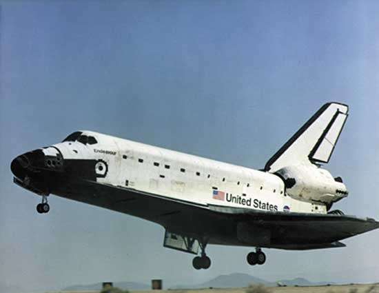

Space Shuttle
The Space Shuttle was a partially reusable low Earth orbital spacecraft system operated by the U.S. National Aeronautics and Space Administration (NASA), as part of the Space Shuttle program. The first of four orbital test flights occurred in 1981, leading to operational flights beginning in 1982. In addition to the prototype whose completion was cancelled, five complete Shuttle systems were built and used on a total of 135 missions from 1981 to 2011, launched from the Kennedy Space Center (KSC) in Florida. Operational missions launched numerous satellites, interplanetary probes, and the Hubble Space Telescope (HST); conducted science experiments in orbit; and participated in construction and servicing of the International Space Station. The Shuttle fleet's total mission time was 1322 days, 19 hours, 21 minutes and 23 seconds.